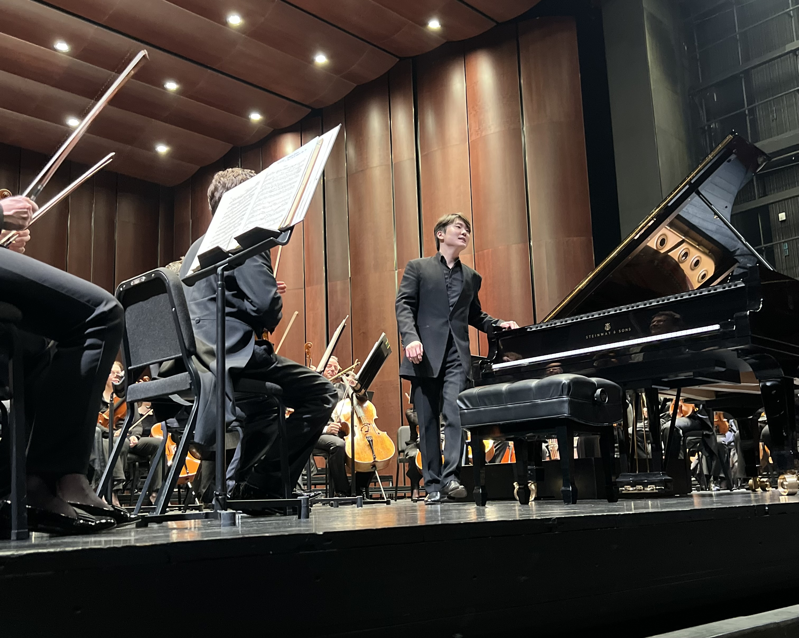
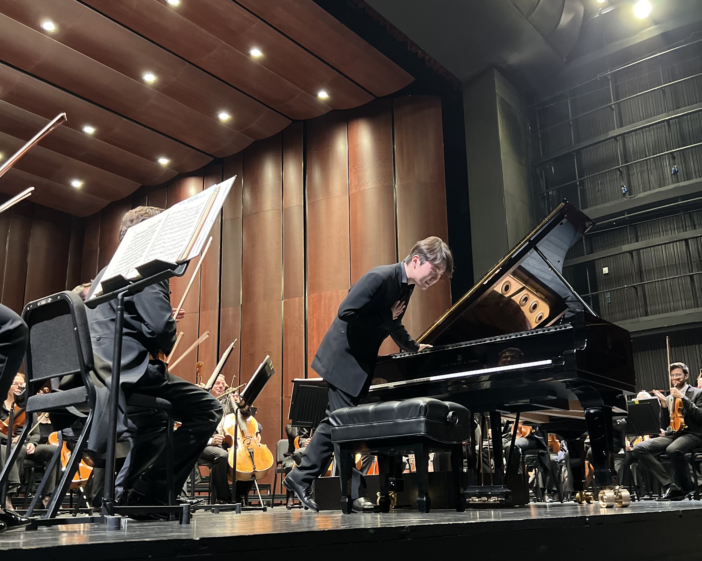
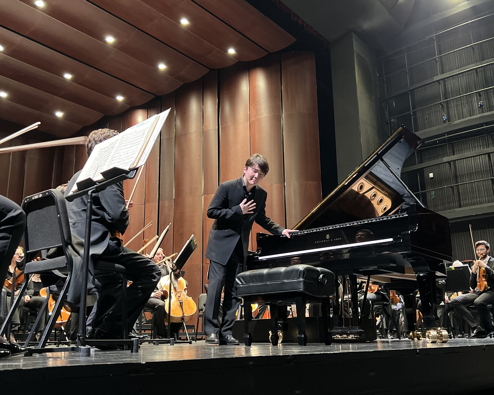
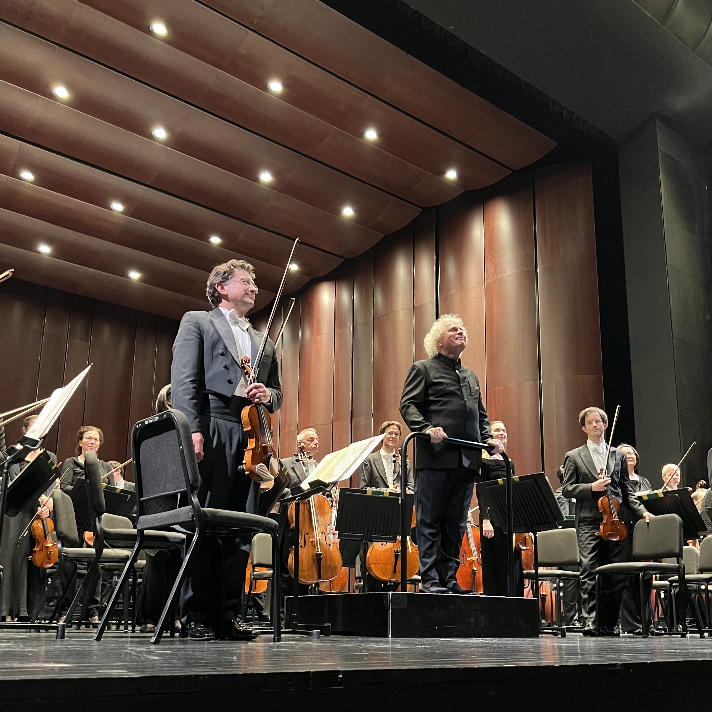
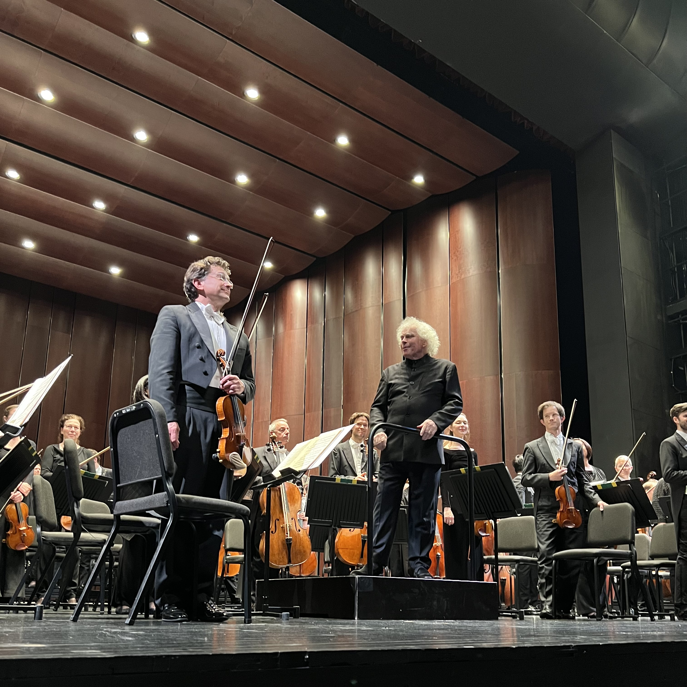
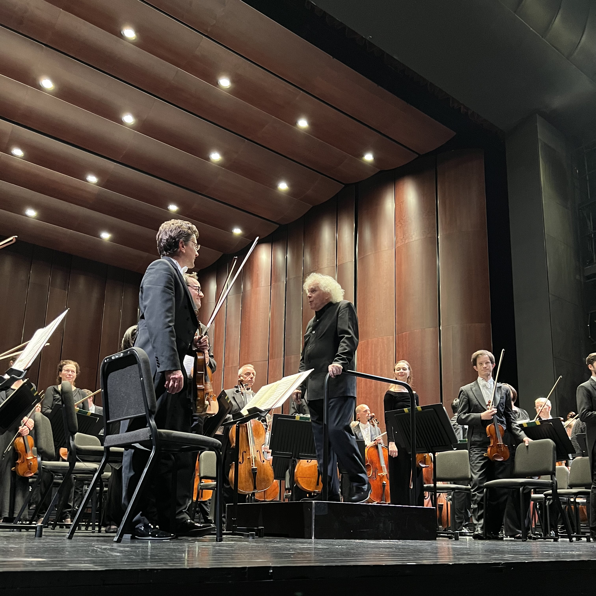

Seong‑Jin Cho with Simon Rattle & the Bavarian Radio Symphony Orchestra
Concert Review · 9 Dec, 2024
The concert I chose features Simon Rattle, Seong-Jin Cho, and the BRSO. The reason I wanted to choose this concert is because when I first got into classical music, I started with Beethoven’s symphonies. After listening to Beethoven, I moved on to Mahler, then Richard Strauss. I discovered on YouTube that the BRSO has a very comprehensive discography of these three composers. Their recordings are high quality, with minimal background noise. More importantly, I found that I really resonated with the personalities of their former conductors, Mariss Jansons and Bernard Haitink. As a result, I listened to many of BRSO’s recordings and developed a strong impression of the orchestra.
When I found out that the BRSO was coming to Taiwan, I immediately decided that I had to attend the concert. And with Simon Rattle and Seong-Jin Cho performing as well, it made me even more determined not to miss it. So when I saw that tickets went on sale on OPENTIX in August, I bought mine right away — and I was lucky enough to get the student discount too, which made me incredibly happy!
Simon Rattle was born in the UK and is 69 years old this year. In 1995, he was knighted by the Queen of England. He is currently the Chief Conductor of the Bavarian Radio Symphony Orchestra and Principal Guest Conductor of the Czech Philharmonic. He has also served as Music Director of the London Symphony Orchestra, the Berliner Philharmoniker, and the City of Birmingham Symphony Orchestra.
Seong-Jin Cho was born in South Korea and is 30 years old this year. He has won several major piano competitions, including First Prize at the International Chopin Piano Competition, Third Prize at the Arthur Rubinstein International Piano Master Competition, and Third Prize in the piano category of the International Tchaikovsky Competition. He is now considered a superstar in the world of classical music.
The BRSO is one of the top orchestras in the world. Its former conductors include Mariss Jansons, Lorin Maazel, Colin Davis, Rafael Kubelík, and Eugen Jochum.
This concert was held in the Grand Theater of the National Taichung Theater.
The National Taichung Theater is located in Taichung’s 7th Redevelopment Zone in Xitun District. It was designed by architect Toyo Ito. The theater complex includes a Grand Theater with 2,007 seats, a Medium Theater with 794 seats, and a Small Theater with 200 seats.
Important Milestones in the Theater's History: In October 2001, funding for the construction was approved. In 2005, architect Toyo Ito won first prize in the international design competition. In December 2009, construction began, carried out by Lee Ming Construction. On November 23, 2014, the building was inaugurated by Mayor Jason Hu. The theater was then temporarily closed on January 1, 2015, for additional modifications. It officially opened on September 30, 2016.
The program for this concert features Brahms’ Piano Concerto No. 2 in the first half, followed by Symphony No. 2 in the second half.
First, in the first half, the piece is Brahms’ Piano Concerto No. 2. Brahms began composing it in 1878 and completed it in 1881. He himself performed the premiere.
As for the instrumentation, Brahms scored the piece for first and second violins, viola, cello, double bass, two flutes, two oboes, two clarinets, two bassoons, four horns, two trumpets, and timpani. The concerto consists of four movements and takes about 48 minutes to perform, making it a relatively long concerto.
The first movement is marked Allegro non troppo and is written in sonata form. The second movement, Allegro appassionato, is a scherzo, and it is also structured in sonata form. The third movement, Andante, follows an ABA form. The final movement, Allegretto grazioso, is a rondo that features five distinct themes. Throughout the entire concerto, Brahms carefully balances the roles of the piano and the orchestra. He also makes extensive use of motivic development, allowing themes to evolve and reappear across different movements.
Moving on to the second half of the concert, Brahms composed this piece in 1877 during a holiday in Austria. Inspired by the beauty of the natural scenery around him, he created this work.
As for the instrumentation, Brahms scored the piece for first and second violins, viola, cello, double bass, two flutes, two oboes, two clarinets, two bassoons, four horns, two trumpets, three trombones, tuba, and timpani. The symphony has four movements and takes approximately 45 minutes to perform.
The first movement is marked Allegro non troppo and is written in sonata form. The second movement, Adagio non troppo, follows an ABA form. The third movement, Allegretto grazioso, also adopts an ABA structure. The final movement, Allegro con spirito, returns to sonata form. In terms of compositional techniques, Brahms often develops his music from short motifs, which he transforms and varies throughout the piece. He also uses rich harmonies to add a lyrical quality to the music. In addition, he employs counterpoint, allowing motifs and themes to weave through different voices and instrumental lines.
This performance was absolutely outstanding. Both Seong-Jin Cho and the BRSO delivered music that truly reflected what you would expect from a top-level soloist and a world-class orchestra.
First, Seong-Jin Cho — his performance was incredibly complete, and his control of tone color was outstanding. It was truly astonishing and left a deep impression on me. As someone without a musical background, I believe a great soloist should be able to make the music feel like waves, with natural rises and falls. That’s what brings the music to life. And in my opinion, Seong-Jin Cho did exactly that — absolutely flawless.
By the way, my seat was in the first row — it was actually my first time sitting that close. After experiencing it, I think sitting in the front row for a concerto is amazing. I’ve previously heard Hilary Hahn and Janine Jansen perform concertos — for Hilary Hahn, I was in the 4th floor of the National Concert Hall, and for Janine Jansen, I sat on the second level at Concert Hall of Weiwuying. In both cases, the sound was a little quiet.
Next is the BRSO — their performance was just as impressive and incredible. Every individual sound was like an apple or pear in a premium fruit gift box — full, rich, and solid in tone, and just like those fruits, the sound felt fragrant and sweet. Beyond that, each musician was incredibly generous — you could feel that they genuinely wanted to share the music they had prepared with the entire hall. Everyone played with so much confidence, as if they knew for sure that they wouldn’t make a mistake. Most importantly, the way the different sections blended and intertwined their melodies was absolutely perfect, and the harmonies were so smooth and well-balanced. There’s no doubt — this is the sound of a truly world-class orchestra.
Finally, there's Simon Rattle. I think his music is truly magical. My impression is that his interpretation might not always be the most dazzling or the most faithful to what the composer originally intended, but somehow, the overall result just sounds perfect. Bravo!
Lastly, I’d like to apologize to you, teacher — I forgot to take photos of the ticket, the program, and myself at the venue.
When I got to my seat in the concert hall, there was a girl who also had a student ticket. Her mother saw that my seat was better and told me that her daughter studies piano and really wanted to see Seong-Jin Cho’s hands, so they asked if I would switch seats with her.
At first, I didn’t agree, but her mother kept pleading with me. Also, I thought her daughter was really cute, and I believe that education and the passing down of classical music are important — so I ended up offering a compromise: we could switch seats for the first half, but I wanted my seat back for the second half. So I guess you could say I half agreed to their request.
Of course, they were super happy, but I still felt conflicted before the concert started — it meant I’d be sitting farther away from Seong-Jin Cho. And in the end, I forgot to take any photos of myself at the venue. I hope you can understand, teacher.